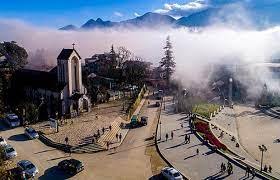

Sapa

Điểm dừng chân thứ 2 trên chuyến xe của Cuồng đó chính là Sapa.
Là địa điểm du lịch Việt Nam nổi tiếng thu hút rất đông du khách trong và ngoài nước ghé thăm. Nhiều du khách miền Bắc ví Sapa như một Đà lạt thứ 2 cũng đúng, nhưng mà theo Cuồng chỉ là ở một số điểm chung nào đó thôi.
Các bạn đã đi du lịch Sapa chưa? Các bạn đánh giá thế nào về điểm du lịch Sapa,
hãy comment cho Cuồng ý kiến của các bạn nha.
Du lịch Sapa bạn sẽ được trải nghiệm 4 mùa trong một ngày, chìm vào trong cảnh sắc sương khói mờ ảo vào mỗi sớm mai hay tối muộn. Khám phá Sapa là khám phá nét văn hóa dân tộc độc đáo nơi bản làng Cát Cát, cùng Bản Tả Van, Tả Phìn với khung cảnh yên bình. Thử nghiệm cảm giác mạnh trên cung đường uốn lượn của Đèo Ô Quy Hồ, rồi lại lịm tim với cảnh sắc thiên đường ở Cổng trời. Hay chinh phục đỉnh Phanxipang – nóc nhà Đông Dương không thể bỏ qua khi du lịch Sapa. Bên cạnh đó là những địa danh Thác Bạc, Thác Tình yêu, Thung lũng Mường Hoa, núi Hàm Rồng, Thung lũng Hoa Hồng,…cũng sẽ đốn tim bạn bởi cảnh sắc trữ tình. Thế nên, không lạ khi đưa Sapa vào Top 16 địa điểm du lịch hấp dẫn nhất Việt Nam phải ko nào.